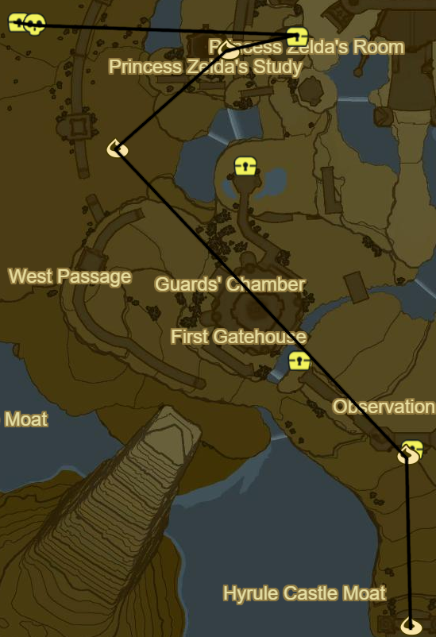
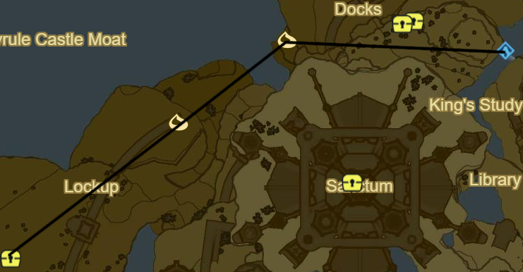
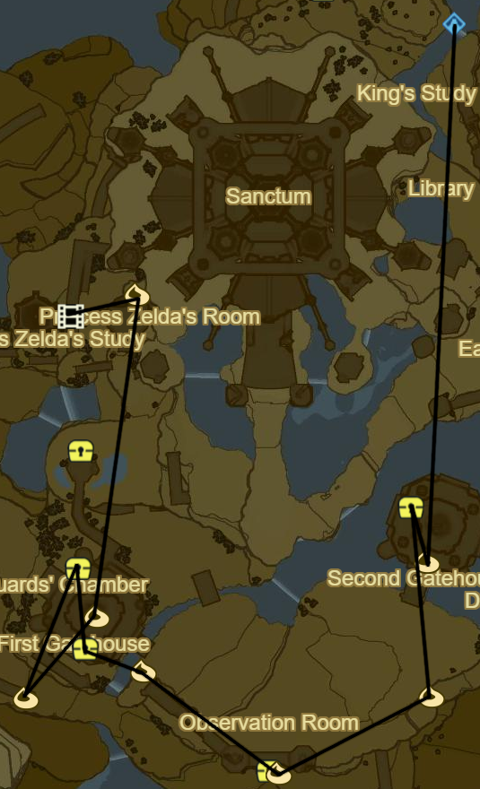
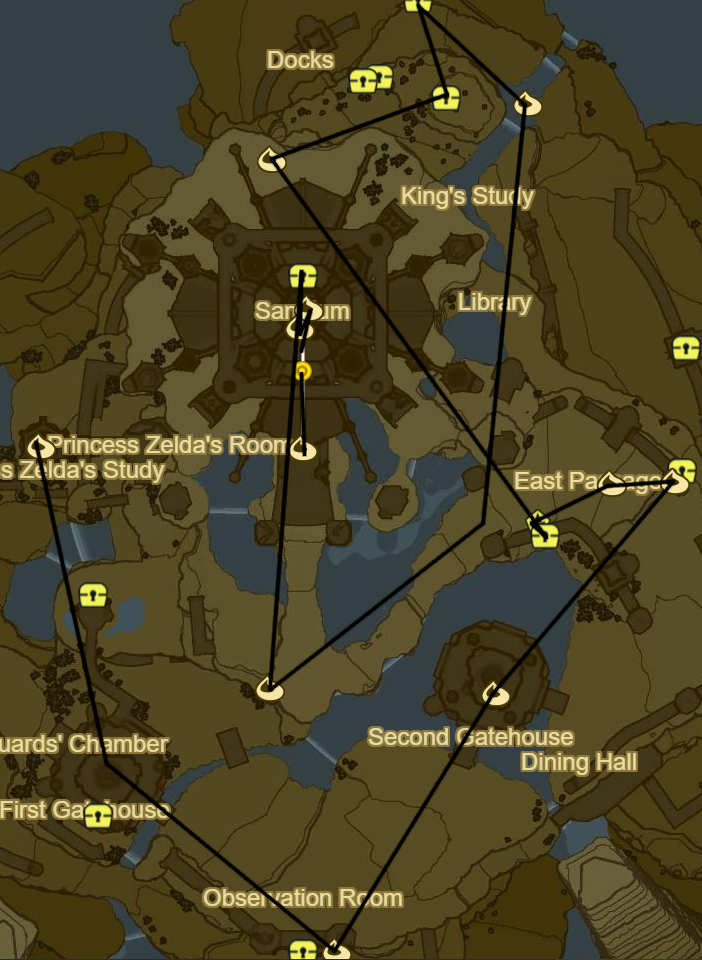

Hyrule Castle

Korok 875: Rock atop bridge gate
Korok 876: Shoot coat of arms dead ahead
Use lower entrance to W
Take Mine cart
Korok 877: Egg offering
Take turn to right
Korok 878: Rock halfway up deep shaft
Shard of Dinraal's Fang side area midway up shaft with ladder behind cracked wall
Double back and break into Lockup
Follow path to Left to Stalnox (40/40)
Hylian Shield

Follow path the other direction until outside
Korok 879: Pinwheel shooting atop wall above exit
Korok 880: Rock to E just past the Docks Entrance
Take Entrance to E into Docks
Light large torch atop docks to reveal Shrine
Saas Ko'sah Shrine (120/120)
Shrine 120!
Side Quest: A Gift From the Monks
Warp to Rona Kachta Shrine
Cap of the Wild
Tunic of the Wild
Trousers of the Wild
Use the remaining Spirit Orbs
Return once done

Take stairs up to Library
Take third floor exit on left side of Library
Follow passage
Royal Guard Bow
Take broken stairwell up
Korok 881: Acorn behind cracked wall after stairwell
Take left Turn
Side Quest: EX Royal Guard Rumors
Royal Guard Uniform
Follow Passage into Dining Hall
Royal Guard Spear in fireplace
Korok 882: Rock beneath cracked boulder down and towards main entrance
Return through Dining hall Entrance and head left to Observation Room
Korok 883: Pinwheel shooting on balcony
Return to main path and take entrance on right
Korok 884: Hanging acorn behind cracked wall
Shard of Nayrda's Fang
Chest under stairs in Guards' Chamber
Side Quest: EX Royal Guard Rumors
Chest atop wooden platform
Royal Guard Boots
Royal Guard Claymore
Moblin in downstairs sparring area
Take stairs up and back outside
Korok 885: Rock atop wall just past Malice
Follow path to First Gatehouse
Korok 886: Fairylights atop First Gatehouse Spire
Head North
Follow stairs up to Princess Zelda's Room
Korok 887: Rock on balcony
Climb up to bridge
Recovered Memory 12 - Father and Daugher (17/18)
Drop Travel Medallion
Warp to Ta'loh Naeg Shrine
Speak to Impa
Warp to Ha Dahamar Shrine
Korok 888: Rock atop tree SE of Stable to N
Korok 889: Pinwheel shooting to E
Recovered Memory 17 - Zelda's Awakening to NW (18/18)
Warp back to castle

Korok 890: Fairylight atop spire atop Princess Zelda's Study
Take passage below Zelda's Study inside
Clear out Malice and follow path outside
Glide back towards First Gatehouse
Take Wall around malice to S
Korok 891: Pinwheel shooting to E above Observation Room
Glide around and destroy malice
Continue ahead into Second Gatehouse
Korok 892: Fairylights atop Second Gatehouse Spire
Korok 893: Rock on Wall above to NE
Head N for entrance to East Passage
Take minecart to ice blocks
Korok 894: Fairylights inside largest ice
Stone Talus (Rare) at end of tracks (40/40)
Shard of Farosh's Fang opposite passage using Updraft
Take Updraft passage back into Library
King's Study at opposite end of Library
Royal Guard Shield
Take exit above study out of castle
Naydra's Scale under slab above exit
Korok 895: Rock beneath cracked boulder atop cliff outside passage
Dinraal's Scale behind cracked boulder to NE
Korok 896: Lilies to SE up Waterfall
Follow path back around Castle to main path
Korok 897: Rock beneath cracked boulder just S of Main Castle Entrance
Side Quest: EX Royal Guard Rumors
Royal Guard Cap in Upper Sanctum
Korok 898: Castle Tower Balloon above Bell
Korok 899: Fairylights atop spire
Korok 900: Race from Sanctum Balcony
Enter Castle and Face Calamity Ganon